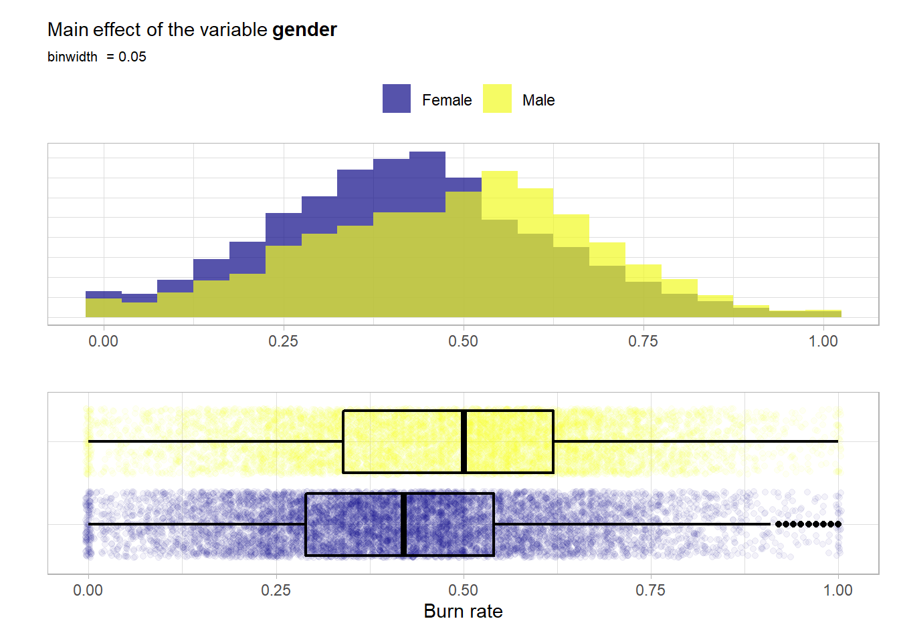

Chapter 5 Let’s boost the models
For modeling two additional packages are required.[15]
library(xgboost)
library(ranger)For parallel computation the doParallel package is used.[16]
library(doParallel)
# Create a cluster object and then register:
cl <- makePSOCKcluster(2)
registerDoParallel(cl)ADJUUUUUUUUUUUUUUUUUUUUUUUUUUUUUUUUUUUUUUUUST
To do
register parallel backend
create models and workflows
create resampling objects
choose tuning method (racing/iterative or grid search)
tune models and select best ones
compare final models to test set
save final model
ADJUUUUUUUUUUUUUUUUUUUUUUUUUUUUUUUUUUUUUUUUST
5.1 Burnout data
Final metrics to be determined!!
First one has to set a metric for the evaluation of the final performance. This will be the mean average error (MAE) which is kind of the \(L_1\) norm of performance metrics.
The first thing is to set up some trivial baseline models.
# the trivial intercept only model:
bout_predict_trivial_mean <- function(new_data) {
rep(mean(burnout_train$burn_rate), nrow(new_data))
}
# the trivial scoring of mental fatigue score (if missing intercept model)
bout_predict_trivial_mfs <- function(new_data) {
pred <- new_data[["mental_fatigue_score"]] / 10
pred[is.na(pred)] <- mean(burnout_train$burn_rate)
pred
}Evaluate the performance of the two models on the training data. In the end of this section they will be applied to the test data set alongside the other models.
# intercept only model
mae_vec(truth = burnout_train$burn_rate,
estimate = bout_predict_trivial_mean(burnout_train))## [1] 0.1596372# trivial mixed model
mae_vec(truth = burnout_train$burn_rate,
estimate = bout_predict_trivial_mfs(burnout_train))## [1] 0.1262089# Models:
# Random forest model for comparison
bout_rf_model <- rand_forest(trees = tune(),
mtry = tune()) %>%
set_engine("ranger") %>%
set_mode("regression")
bout_boost_model <- boost_tree(trees = tune(),
learn_rate = tune(),
loss_reduction = tune(),
tree_depth = tune(),
mtry = tune(),
sample_size = tune(),
stop_iter = 10) %>%
set_engine("xgboost") %>%
set_mode("regression")# Workflows:
bout_rf_wflow <-
workflow() %>%
add_model(bout_rf_model) %>%
add_recipe(burnout_rec_rf)
bout_boost_wflow <-
workflow() %>%
add_model(bout_boost_model) %>%
add_recipe(burnout_rec_boost)# Create Resampling object
set.seed(2)
burnout_folds <- vfold_cv(burnout_train, v = 5)# Have a look at the hyperparameters that have to be tuned and finalize them
bout_rf_params <- bout_rf_wflow %>%
parameters()
bout_rf_params ## Collection of 2 parameters for tuning
##
## identifier type object
## mtry mtry nparam[?]
## trees trees nparam[+]
##
## Model parameters needing finalization:
## # Randomly Selected Predictors ('mtry')
##
## See `?dials::finalize` or `?dials::update.parameters` for more information.This shows that the mtry hyperparameter has to be adjusted depending on the data. Moreover with the dials::update function one can manually set the ranges that should be used for tuning.
# default range for tuning is 1 up to 2000 for the trees argument
# set the lower bound of the range to 100. Then finalize the
# parameters using the training data.
bout_rf_params <- bout_rf_params %>%
update(trees = trees(c(100, 2000))) %>%
finalize(burnout_train)
bout_rf_params## Collection of 2 parameters for tuning
##
## identifier type object
## mtry mtry nparam[+]
## trees trees nparam[+]bout_rf_params %>% pull_dials_object("mtry")## # Randomly Selected Predictors (quantitative)
## Range: [1, 9]bout_rf_params %>% pull_dials_object("trees")## # Trees (quantitative)
## Range: [100, 2000]Now this parameter object is ready for tuning and the same steps have to be performed on the boosting workflow.
bout_boost_params <- bout_boost_wflow %>%
parameters()
bout_boost_params ## Collection of 6 parameters for tuning
##
## identifier type object
## mtry mtry nparam[?]
## trees trees nparam[+]
## tree_depth tree_depth nparam[+]
## learn_rate learn_rate nparam[+]
## loss_reduction loss_reduction nparam[+]
## sample_size sample_size nparam[+]
##
## Model parameters needing finalization:
## # Randomly Selected Predictors ('mtry')
##
## See `?dials::finalize` or `?dials::update.parameters` for more information.# first a look at the default ranges
trees()## # Trees (quantitative)
## Range: [1, 2000]tree_depth()## Tree Depth (quantitative)
## Range: [1, 15]learn_rate()## Learning Rate (quantitative)
## Transformer: log-10
## Range (transformed scale): [-10, -1]loss_reduction()## Minimum Loss Reduction (quantitative)
## Transformer: log-10
## Range (transformed scale): [-10, 1.5]sample_size()## # Observations Sampled (quantitative)
## Range: [?, ?]So sample_size must also be finalized. Again the lower bound on the number of trees will be raised to 100. The other scales are really sensible and will be left as is.
bout_boost_params <- bout_boost_params %>%
update(trees = trees(c(100, 2000))) %>%
finalize(burnout_train)
bout_boost_params## Collection of 6 parameters for tuning
##
## identifier type object
## mtry mtry nparam[+]
## trees trees nparam[+]
## tree_depth tree_depth nparam[+]
## learn_rate learn_rate nparam[+]
## loss_reduction loss_reduction nparam[+]
## sample_size sample_size nparam[+]bout_boost_params %>%
pull_dials_object("sample_size")## Proportion Observations Sampled (quantitative)
## Range: [0.1, 1]bout_boost_params %>%
pull_dials_object("mtry")## # Randomly Selected Predictors (quantitative)
## Range: [1, 9]Now also this parameter object is ready to be used.
# define a metrics set used for evaluation of the hyperparameters
regr_metrics <- metric_set(mae, rmse)# took roughly 30 minutes
system.time({
set.seed(2)
bout_rf_tune <- bout_rf_wflow %>%
tune_grid(
resamples = burnout_folds,
grid = bout_rf_params %>%
grid_latin_hypercube(size = 30, original = FALSE),
metrics = regr_metrics
)
})
# visualization of the tuning results (snapshot of the output below)
autoplot(bout_rf_tune) + theme_light()
# this functions shows the best combinations wrt the mae metric of all the
# combinations in the grid
show_best(bout_rf_tune, metric = "mae")
Figure 5.1: Result of a spacefilling grid search for the random forest model.
The visualization alongside the best performing results suggest a value of mtryof 3 and 1000 trees should suffice. Thus one can finalize and fit this model.
final_bout_rf_wflow <-
bout_rf_wflow %>%
finalize_workflow(tibble(
trees = 1000,
mtry = 3
)) %>%
fit(burnout_train)# tuning grid just for the #trees
first_grid_boost_burn <- crossing(
trees = seq(250, 2000, 250),
mtry = 9,
tree_depth = 6,
loss_reduction = 0.000001,
learn_rate = 0.01,
sample_size = 1
)# first tune mainly the number of trees to kind of detect a number of
# trees that is large enough then tune the tree specific arguments
# if one tunes all at the same time the grid grows to large
# took roughly 1 minute
system.time({
set.seed(2)
bout_boost_tune_first <- bout_boost_wflow %>%
tune_grid(
resamples = burnout_folds,
grid = first_grid_boost_burn,
metrics = regr_metrics
)
})
# plot output is shown in the figure below
autoplot(bout_boost_tune_first) + theme_light()
show_best(bout_boost_tune_first)
Figure 5.2: Result of the first grid search for the XGBoost model.
So 1500 trees should suffice here.
# fix the number of trees by redefining the boosted model with a
# fixed number of trees.
bout_boost_model <- boost_tree(trees = 1500,
learn_rate = tune(),
loss_reduction = tune(),
tree_depth = tune(),
mtry = tune(),
sample_size = tune(),
stop_iter = 10) %>%
set_engine("xgboost") %>%
set_mode("regression")
# update the workflow
bout_boost_wflow <-
bout_boost_wflow %>%
update_model(bout_boost_model)
bout_boost_params <- bout_boost_wflow %>%
parameters() %>%
finalize(burnout_train)
# reduced hyperparameter space
bout_boost_params## Collection of 5 parameters for tuning
##
## identifier type object
## mtry mtry nparam[+]
## tree_depth tree_depth nparam[+]
## learn_rate learn_rate nparam[+]
## loss_reduction loss_reduction nparam[+]
## sample_size sample_size nparam[+]Now perform the major grid search over all the other hyperparameters.
# now tune all the remaining hyperparameters with a large space filling grid
# took roughly 1.5 hours
system.time({
set.seed(2)
bout_boost_tune_second <- bout_boost_wflow %>%
tune_grid(
resamples = burnout_folds,
grid = bout_boost_params %>%
grid_latin_hypercube(
size = 200),
metrics = regr_metrics
)
})
show_best(bout_boost_tune_second, metric = "mae")Refine the grid i.e. the parameter space according to the results of the last grid search.
# now tune all the remaining hyperparameters with a refined space filling grid
# took roughly 2 hours
system.time({
set.seed(2)
bout_boost_tune_third <- bout_boost_wflow %>%
tune_grid(
resamples = burnout_folds,
grid = bout_boost_params %>%
update(
mtry = mtry(c(5,9)),
tree_depth = tree_depth(c(4,5)),
learn_rate = learn_rate(c(-1.7, -1.3)),
loss_reduction = loss_reduction(c(-8,-3)),
sample_size = sample_prop(c(0.4, 0.9))
) %>%
grid_latin_hypercube(
size = 200),
metrics = regr_metrics
)
})
show_best(bout_boost_tune_third, metric = "mae")With this final grid search one is ready to finalize the model.
final_bout_boost_wflow <-
bout_boost_wflow %>%
finalize_workflow(tibble(
mtry = 9,
tree_depth = 4,
learn_rate = 0.02,
loss_reduction = 0.0000003,
sample_size = 0.8
)) %>%
fit(burnout_train)# stop cluster
stopCluster(cl)# calculate the mae an the rmse for both models (random forest and xgboost)
burnout_test %>%
mutate(rf_pred = predict(final_bout_rf_wflow,
new_data = .)[[".pred"]],
boost_pred = predict(final_bout_boost_wflow,
new_data = .)[[".pred"]]) %>%
mutate(
rf_pred = case_when(
rf_pred < 0 ~ 0,
rf_pred > 1 ~ 1,
TRUE ~ rf_pred
),
boost_pred = case_when(
boost_pred < 0 ~ 0,
boost_pred > 1 ~ 1,
TRUE ~ boost_pred
)
) %>%
select(burn_rate, rf_pred, boost_pred) %>%
pivot_longer(-burn_rate, names_to = "model") %>%
group_by(model) %>%
summarise(
mae = mae_vec(
truth = burn_rate,
estimate = value
),
rmse = rmse_vec(
truth = burn_rate,
estimate = value
)
)## # A tibble: 2 x 3
## model mae rmse
## <chr> <dbl> <dbl>
## 1 boost_pred 0.0470 0.0599
## 2 rf_pred 0.0473 0.06085.1.1 Variable Importance
final_bout_boost_wflow %>%
pull_workflow_fit() %>%
vip::vip() +
theme_light() 
Some to dos and questions:
- cv also the test set? then visualize with error bands
- else visualize vs trivial model?
- variable importance
cite vip package